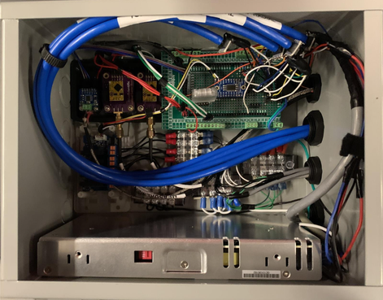
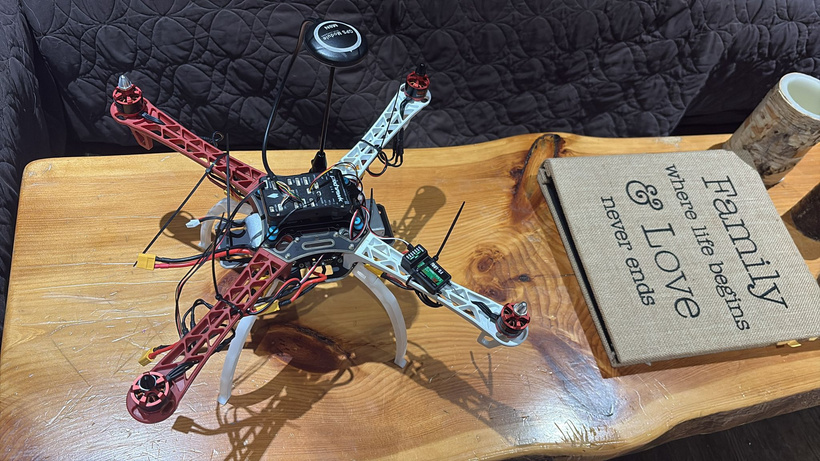
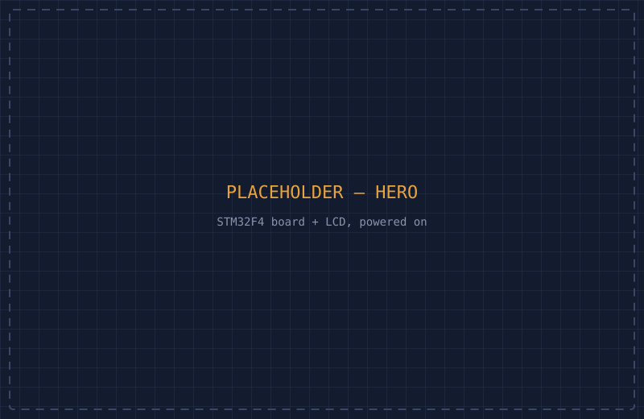

Hydroponics Farm Control System
Redesigned the control system for a vertical hydroponic air-lift farm — replacing a fragile breadboard prototype with a compact ESP32-based embedded platform and custom PCB.
ESP32
KiCad
Sensor Integration
PCB Design

UAV Air Quality Monitoring System
A UAV-mounted sensing platform for repeatable, waypoint-based air quality measurements over agricultural environments, with a decoupled sensing/flight architecture.
ESP32
I²C
Signal Conditioning
Flight Systems

Two-Channel USB Oscilloscope
A two-channel, 500kHz-bandwidth signal acquisition device built from scratch — schematic, PCB, and a hybrid interrupt/DMA firmware architecture around an STM32.
STM32
SPI
DMA / ADC
USB CDC

Real-Time PID Temperature Controller
A multi-task real-time PID controller on an STM32F4 running uC/OS-III, with dedicated control, display, input, and clock tasks coordinating over shared data structures.
STM32F4
uC/OS-III
PID Control
RTOS